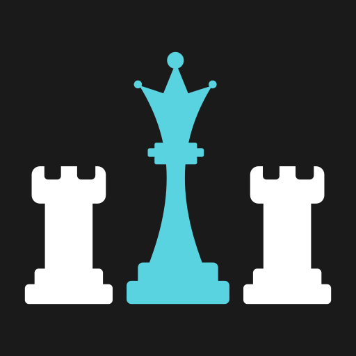

->> Noteworthy Projects <<-
My work is a direct reflection of my commitment to being a polymath in my field. While my main focus might be in my silly cubicle in corporate world, but my weekends are usually reserved for diving into a variety of projects that challenge me in new ways. This is where I push boundaries, experiment with Art-Code fusion, and build things just for the joy of it. This diversification not only keeps my skills sharp but also fuels my creativity. You can a view a sample of my projects or view all
JSON Visualiser
Visualise the structure of JSON in an HTML file with some additional info like number of elements in an array
Visit Code

Telecom Churn Case Study
Data cleanup and analysis on a telecom company revealed the reasons for customer churning away from that company
Visit Code

Chess Churn Case Study
Data extrapolation, analysis and simple EDA on dataset of chess games played predict the best openings and chances of winning
Visit Code
->> Skills <<-
With a strong foundation in Python, I build solutions by integrating diverse libraries. I love exploring and combining packages—like those for data analysis, web frameworks, and machine learning, to tackle new challenges. This approach lets me create flexible, custom tools that go beyond standard applications. For more insight on this, you can look into my projects

Pandas

SQL
->> Skills beyond the horizon <<-
My passion for technology is driven by the power to create and explore beyond the horizon. While I have a strong coding foundation, my experience across diverse domains. If you want to see the skills that define my personality, you have come to the right section. But if you are aimed at looking my coding skills then head over to my projects
3D Animation
Some food is best served hot and some visuals are best understood in 3D. Mind you, it is a world apart from 2D. For this, I use my favourite Free and Open Source Software (FOSS) Blender
Blender

Vector Graphics
2D is better when you don't want to sweat it, but still want to deliver a meaningful insight. For this, I use my favourite Free and Open Source Software (FOSS) Inkscape
Inkscape

Linux
Strongly believe that Linux is better than Windows in a few ways, especially the ways I use it. I use Arch ByTheWay. But its very advanced. So, I recommend Ubuntu for beginners
Ubuntu